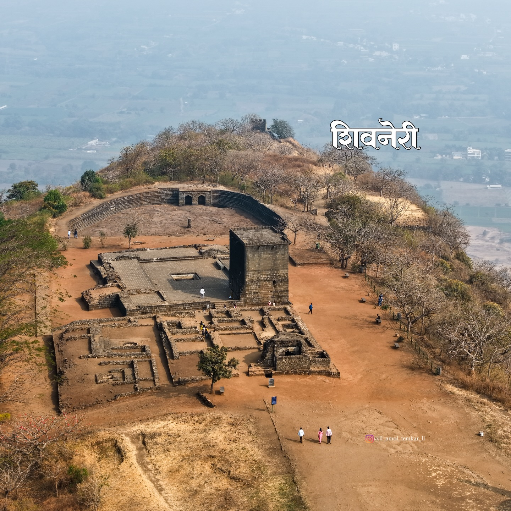

Image: Wikimedia CommonsShivneri Fort is a historic hill fort situated near the town of Junnar in Pune district, Maharashtra. Rising to an altitude of approximately 1,030 metres, the fort stands on a steep, isolated rocky hill encircled by dense forests of the Sahyadri range. Its sheer rock faces and narrow access paths made it an extraordinarily strong defensive position, and it served as a key military stronghold for various ruling powers across many centuries.
The fort complex contains several ancient water cisterns, cave shrines, the Shivai Devi temple, and a small room traditionally identified as the birthplace of Chhatrapati Shivaji Maharaj. For Marathas and millions of Indians, Shivneri is not merely a fort — it is sacred ground.
Shivneri Fort is most renowned as the birthplace of Chhatrapati Shivaji Maharaj, who was born here on 19 February 1630 to Jijabai and Shahaji Bhosale. His mother Jijabai took refuge at Shivneri for its security, and it was within these fort walls that the future founder of the Maratha Empire spent his early childhood — a beginning that would shape one of the most remarkable rulers in Indian history.
Shivneri is located approximately 90 kilometres north of Pune city, near the town of Junnar in the Western Ghats. The fort is accessible via a winding path with several gates — including the notable Mahadarwaja — each built as a layer of defence against invaders. The name Shivneri is derived from the goddess Shivai, whose temple stands prominently within the fort.
The fort's origins trace back to the 6th century CE, and it was controlled at various points by the Satavahanas, Chalukyas, Bahamanis, Nizamshahis of Ahmednagar, and eventually the Mughals. It was under the control of the Nizamshah of Ahmednagar when Jijabai and Shivaji took shelter here. The fort was later captured by Mughal forces in 1637 CE, after which the Bhosale family relocated.
Shivneri holds an irreplaceable place in Indian history as the birthplace of Chhatrapati Shivaji Maharaj — the visionary king who established the Maratha Empire and became a symbol of self-rule, justice, and courage for generations. The fort is revered not only as a monument but as a place of pilgrimage, drawing hundreds of thousands of visitors each year, especially on Shivaji Jayanti.
Beyond its association with Shivaji Maharaj, Shivneri is a fine example of early Maratha and Deccan fortification architecture. Its water management system — with large carved cisterns capable of storing water year-round — reflects the advanced engineering knowledge of its builders. The fort has been declared a protected monument by the Archaeological Survey of India.